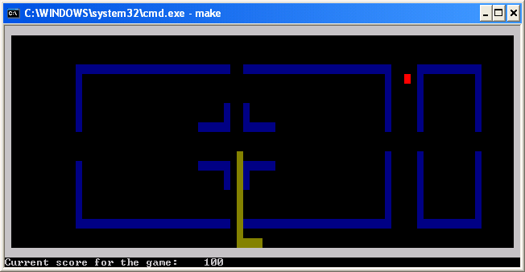

Machine Problem 3: Snake
|
Assigned |
Tuesday, March 1, 2005 |
|
Due Date |
Wednesday, March 16, 2005 |
|
Purpose |
Asynchronous I/O, interrupts, text
mode video, fundamental data structures |
|
Points |
70 |

Introduction
In this MP, you will be writing a program that emulates the game Nibbles or
Snake. A cursory search on Google reveals numerous different versions of the
game. You will be implementing a version where the player controls the snake
and avoids the walls on the screen. The layout of the walls will be designed
by the player before the game starts. The game ends when the snake hits the
wall or its own body.
It might be helpful to peruse Chapters 7, 10 and 11 of the Lab Notes
before starting on the assignment.
Problem Description
Program Variables
Section 1 of the program framework lists all constants used in the
program. You should take advantage of this list of constants and not redefine
them. Moreover, any use of magic numbers in your code will be frowned
upon and may result in lower points. For instance, hard coding the value 01h
for the Escape key in your code is not going to win you favors with any
of the TAs. Please read carefully the list of
constants before begin coding.
To help you distinguish between subroutines and variable names, an
underscore is added to the name of every variable, e.g., _timerTicks.
Again, before you begin coding, please read through the list of variables. For
your convenience, variables of particular importance are briefly discussed
below.
- _currentBoard – this is an array that
holds information about the game board. Each cell in the array reflects the
information that the user will see on the screen. _currentBoard
is defined to be NUMCOLS * NUMROWS of byte values. The last row of
the screen is not included in the game board (recall that text video mode is
80 columns by 25 rows). A cell with a value 0 would be empty; a cell with
the value 1 would be part of the snake, etc.
- _mouseX, _mouseY
– these two variables give the position on the screen that the user has
clicked on. The point with coordinates (x,y)=(0,0)
corresponds to the cell at the top left corner of the text video display.
- _mpStatus – this is an 8-bit vector
that is used to represent the current status of the game. More comments
about this data structure are given in the source file. Here is how you
should interpret the values: if _mpstatus
is set to 01000001, it means that the snake is moving up and that the
user has already completed drawing the borders. It is important that while
you modify some of the status bits in a given subroutine, you preserve the
other bits unchanged. The program will behave erratically if you do not
follow this rule.
- _snakeList – this is a circular
queue that holds the segments of the snake. The front of the queue
contains the head of the snake and the rear of the queue contains the tail
of the snake. The queue stores words. These words
represent offsets into the _currentBoard
array. For instance if the snake's head is at row 2 and column 2,
the offset stored in the array would be 2*NUMCOLS + 2 – 1. You should
never access the queue directly by using _snakeFront.
Instead you should do something like [bx+QFRONT]
where bx has been initialized to
point to _snakeList. Also [bx+QCOUNT]
stores the number of bytes in the queue and, hence, to find out the number
of items, halve this number. In short, ALWAYS remember that the queue holds
words!
Text Mode Video
Section 11.1 of the lab manual discusses text mode video. In this MP, you
will be writing directly to page 0 of video memory, which we will keep
at the standard size of 25 rows and 80 columns. The lab manual has examples on
how to do this. Recall that page 0 of video memory begins at
segment:offset
= B800:0000h. Also, the colors you will be working with in the MP are
defined for you as constants.
To reduce flicker on the screen, you do not redraw everything on the screen
each time the snake moves a step. The only two things that can dynamically
change on the screen would be the apple and the snake. In this
MP you have to come up with a way to only redraw those two objects on the
screen.
Asynchronous Keyboard I/O
In previous MPs, we used the library's kbdin/kbdine
functions to get keyboard input. These functions continuously polled the
keyboard until they received input. In many cases, we want our programs to
accept input from other devices and/or execute other functions while waiting
for user input. This is done by writing your own interrupt service routines (ISRs).
For this MP, you will be obtaining user input from the keyboard
asynchronously. You will also be using the system timer to calculate when the
snake should move next. Currently, the snake will always move at a constant
speed. You are encouraged to change the speed of the snake as the game
progresses, i.e., make the snake move faster after the player has eaten more
apples.
String Instructions
For certain parts of the MP, you can use the string instructions to improve
the performance of your code. Like instructions that we have discussed
already, the string instructions combine the functionality of multiple
instructions into a single instruction. The string instructions are used to do
the following:
- Move a string from one location to another (MOVSB, MOVSW, MOVSD)
- Store a single piece of data to a string (STOSB, STOSW, STOSD)
- Compare strings (CMPSB, CMPSW, CMPSD)
- Scan a string for a specific value (SCASB, SCASW, SCASD)
For specific details and usage of these instructions, refer to Appendix B.4
of the lab notes. With each of the above instructions, you can also use the
REP instruction with the CX register, which repeats the execution of the
instruction CX times. You will not need to use all of the instructions above.
MP3 Program Assignment
You will replace these procedures from the LIBMP3 library by commenting out
the statements calling the library procedure and adding your code. Each
procedure that you write should match the output of the library code exactly.
Each of the subroutine calls and their functionality is described below in the
Subroutines section. The best way to get a feel for the program is to
run it to see how it is supposed to operate. You can also edit the test file
to see how various changes will affect the program execution. The program can
be run by typing mp3 at the
command prompt.
Subroutines
The code you need to implement for this assignment is divided into 17
subroutines. Most of the subroutines are short around 30 lines of code.
Additionally, for your coding sanity, we have been gratuitous and provided
about 500 lines of code for you.
Note: Because most of the subroutines will access global variables,
we used the word reads to indicate that you will be using the value in
a global variable. Similarly, we used the term modifies to show that
you will be modifying the global variable.
|
Subroutines |
Description |
installKeyboard1
[ 2 points ] |
- Installs the keyboard ISR
- Reads: -
- Modifies: [_oldKeyboardV], the interrupt
vector table
- Calls: None
- Notes:
- Read the current value of the ISR out of the interrupt vector
table and store to OldKeyboardV
before updating the table with your keyboard ISR.
- Set keyboardISR1 as the interrupt handler.
- You should read/write the interrupt vector table directly; do not
use int 21h sub-functions to
do so!
- Use
cli
and sti
to provide mutual exclusion to the interrupt vector table
|
removeKeyboard
[ 2 points ] |
- Removes the keyboard ISR
- Reads: [_oldKeyboardV ]
- Modifies: The interrupt vector table
- Calls: None
- Notes:
- Write the original value back to the interrupt vector table.
- You should write the interrupt vector table directly; do not use
int 21h sub-functions to do
so!
- Use
cli
and sti
to provide mutual exclusion to the interrupt vector table
|
keyBoardISR1
[ 2 points ] |
- Obtains and processes keyboard input. This interrupt should only
process the space bar. This is the first
keyboardISR that is installed when the game first runs.
- Input: scancode waiting at port 60h
- Modifies: [_mpStatus]
- Calls: None
- Notes:
- The scancodes for the keys you'll be
using in the MP are defined as constants for you.
- When the user presses SPACEKEY, set the appropriate bit in the
_mpStatus bit vector that signifies
that the user has completed designing the layout of the walls.
- Remember to ACK with the PIC on every
keypress – the lab manual contains the necessary code for this.
|
installKeyboard2
[ 1 points ] |
- Installs the keyboard ISR
- Reads: -
- Modifies: [_oldKeyboardV], the interrupt
vector table
- Calls: None
- Notes:
- Read the current value of the ISR out of the interrupt vector
table and store to OldKeyboardV
before updating the table with your keyboard ISR.
- Set keyboardISR2 as the interrupt handler.
- You should read/write the interrupt vector table directly; do not
use int 21h sub-functions to
do so!
- Use
cli
and sti
to provide mutual exclusion to the interrupt vector table
|
keyBoardISR2
[ 3 points ] |
- Obtains and processes keyboard input. This interrupt should only
process the arrow keys and the escape key. This is the second
keyboardISR that will be installed just
before the game starts.
- Input: scancode waiting at port 60h
- Modifies: [_mpStatus]
- Calls: None
- Notes:
- The scancodes for the keys you'll be
using in the MP are defined as constants for you.
- When the player presses RIGHTKEY, UPKEY, LEFTKEY, DOWNKEY and
ESCKEY, set the appropriate bits in the _mpStatus
bit vector to let the main event loop know what to do next. Be careful
not to clobber any values in _mpStatus.
- HINT: You would want to make use of bit masking.
- Remember to ACK with the PIC on every
keypress – the lab manual contains the necessary code for this.
|
installTimer
[ 2 points ] |
- Installs the timer ISR
- Reads: -
- Modifies: [_oldTimerV], the interrupt
vector table
- Calls: None
- Notes:
- Read the current value of the ISR out of the interrupt vector
table and store to _oldTimerV
before updating the table with your timer ISR.
- Set timerISR as the interrupt handler.
- You should read/write the interrupt vector table directly; do not
use int 21h sub-functions to
do so!
- Use
cli
and sti
to provide mutual exclusion to the interrupt vector table
|
timerISR
[ 2 points ] |
- Processes system timer ticks
- Reads: [_timerTicks]
- Modifies: [_timerTicks]
- Calls: None
- Notes:
- Increment the value in _timerTicks.
- It is IMPORTANT that you specify the segment _timerTicks
is in before incrementing it.
|
delay
[ 2 points ] |
- Stalls the execution of the program loop. This uses busy waiting to
prevent the main loop from executing the next cycle.
- Reads:[ _timerTicks]
- Modifies: [_timerTicks]
- Notes:
- Move 0 into the memory pointed to by _timerTicks.
- Then check if [_timerTicks] is less
than SPEED. If it is, continue looping in a busy wait.
- If not, then return from the subroutine.
|
removeTimer
[ 2 points ] |
- Removes the timer ISR.
- Reads: [_oldTimerV ]
- Modifies: The interrupt vector table
- Calls: None
- Notes:
- Write the original value back to the interrupt vector table
- You should write the interrupt vector table directly; do not use
int 21h sub-functions to do
so!
- Use
cli
and sti
to provide mutual exclusion to the interrupt vector table
|
updateBoard
[ 5 points ] |
- Draws or undraws a wall whenever the
player clicks on a cell on the screen. If there is no wall there, then
draw one when the user clicks on it. Else, erase the wall that was
already there.
- Reads : [_mouseX], [_mouseY]
- Modifies: [_currentBoard]
- Calls: None
- Notes:
- [_mouseX] and [_mouseY]
already contain the mouse positions for you. These have been handled
by the mouse callback which you do not need to write for this
assignment.
- Check to see that both mouse positions are within the gray
borders. Do not draw or undraw anything
that is not within the borders.
- Remember, you are toggling the state of the wall. If there is a
wall, undraw it and vice-versa.
|
generateApple
[ 5 points ] |
- Generates an apple at a valid location on the game board. Draws the
apple to video memory too.
- Reads: [_currentBoard]
- Modifies: [_currentBoard], [_mpStatus],
the video memory
- Calls:
Rand
- Notes:
- Call
Rand to obtain a random location within the
bounds of [_currentBoard].
- Before inserting a new apple in [_currentBoard],
checks to see if the new location is valid, i.e., it is an empty
location.
- If it is move, update the location in [_currentBoard]
and draw the apple in the corresponding location in video memory.
- Finally, set the appropriate bit in [_mpStatus].
- Requirement: Do not call drawScreen
|
enqueue
[ 6 points ] |
- Enqueues a word onto the front of the
circular queue.
- Inputs: bx = offset of the
queue data structure
[bx+QDATA] = word to
enqueue
- Modifies: the queue to reflect the addition of the new item
- Calls: None
- Notes:
- If the count of the number of items on the queue is less than the
maximum, then this subroutine enqueues the
word at [BX+QData] onto the rear of the
circular queue, updating [BX+QCount] and [BX+QRear].
- Refer to the chapter 7 of the lab notes for more details on
queues.
- Requirement: Do not access the queue directly. Use [bx+QFRONT],
[bx+QREAR], etc.
|
dequeue
[ 6 points ] |
- Dequeues a
word from the front of the circular queue.
- Input: bx = offset of the
queue data structure
- Output: [bx+QDATA] = word from the front
of the queue.
- Modifies: the queue to reflect the removal of the front item
- Calls: None
- Notes:
- If the queue is not empty, then this subroutine
dequeues the word from the front of the
queue, places the word in [BX+QData], and
updates [BX+QCount] and [BX+QFront].
- Refer to the chapter 7 of the lab notes for more details on
queues.
- Requirement: Do not access the queue directly. Use [bx+QFRONT],
[bx+QREAR], etc.
|
peek
[ 3 points ] |
- UPDATE:Returns the value at the front of the queue WITHOUT removing it.
- Input: bx = offset of the
queue data structure
- Output: [bx+QDATA] = word from the
front of the queue.
- Calls: None
- Notes:
- If the queue is not empty, then this subroutine places the word at
the front of the queue in [BX+QData].
- Refer to the chapter 7 of the lab notes for more details on
queues.
- Requirement: Do not access the queue directly. Use [bx+QFRONT],
[bx+QREAR], etc.
|
checkMovement
[ 5 points ] |
- Checks the various possible movements and reports if they are valid
and what bits should be set in [_mpStatus].
- Reads: [_mpStatus], [_currentBoard],
[_snakeQList]
- Modifies: [_mpStatus],[_newSnakeHead],
[_score]
- Calls: peek
- Notes:
- Obtain the value from the front of the queue.
- Based on the current position of the head of the snake, and the
current direction from [_mpStatus], you
can determine where the snake will move to next.
- Check if the snake collides with any object and update the
appropriate bits in [_mpStatus] and
[_score].
- For instance, if the snake hits a border or itself, then the game
should end.
- Do not forget to handle all possible types of collisions with
different objects (Think about this! Should you add a segment?
Generate an apple?)
- For valid moves, modify [_newSnakeHead]
to reflect those changes. The value in _newSnakeHead
should be the new position of the snake's head after moving one step
in the appropriate direction.
|
drawSnake
[ 7 points ] |
- Draws the snake at the new position.
- Reads: [_snakeQList], [_newSnakeHead],
[_mpStatus]
- Modifies: [_currentBoard], [_mpStatus],
the video memory
- Calls: enqueue,
dequeue
- Notes:
- You have to think of a way to reflect the changes in the snake
segments using information from the queue and [_newSnakeHead].
- Since information about the snake in present in 3 memory
locations: the video memory, the queue and [_currentBoard],
remember to update all of them!
- Make sure your algorithm handles the addition of a new snake
segment if the snake has eaten an apple.
- Make sure that you modify the bits in [_mpStatus]
to reflect any changes that you made to the game.
- Requirement: Do not call drawScreen.
|
initGame
[ 5 points ] |
- Initializes the queue with appropriate snake segment values
- Reads: [_snakeQList],
- Modifies: [_currentBoard]
- Calls: generateApple,
drawScreen, enqueue
- Notes:
- Put in three continuous segments into the snake. You may choose
where the snake begins. Update the queue to reflect those changes.
- Update [_currentBoard] to reflect
those segments of the snake.
|
Given Code
MAIN (source code given)
- This setups the game and awaits the player to design the walls.
mainSnakeLoop
(source code given)
- This is the main event loop that goes on when the game starts.
drawScreen
(source code given)
- Draws the contents of [_currentBoard] to
video memory.
fillBorders
(source code given)
- Fills the borders of the [_currentBoard].
Rand
- Generates random number with the given seed.
showStatus (source code not given)
- Displays the status of the game at the bottom of the screen.
displaGameOver (source code not given)
Displays the game over box.
Development Log and Cover Memo
As you work on the MP, you will keep a simple MP development log. The log
will document your design decisions, development plan, and debugging
experiences, including the time you spent on different parts of the machine
problem. The log may be kept in any form. In general, whenever you work on a
machine problem, briefly record the starting time, significant design
decisions, progress in coding and testing, bugs you discovered, and the ending
time. Do not record simple syntax errors detected by NASM at assembly
time; these are not considered to be bugs.
Then, you will submit a cover memo of 200 to 400 words (up to one page,
single spaced). The cover memo should answer the following questions, based on
the information that you record in your MP development log.
- How much time did you spend on the design, coding, and testing of each
part or subroutine?
- What kinds of defects (bugs) did you find during the development of the
program? When did you discover these defects (during code review or during
testing)? How did you find them?
- What you would do differently for the next MP?
Type your cover memo into a plain text file in your MP3 directory.
Hints
- The LIBMP3 file contains executable library functions for each of the
routines that you need to implement. This allows you to run the program and
understand how it works before you implement it. You can test your program
with any combinations of your own code and library functions. You will only
receive credit, however, for the routines that you implement yourself.
- When debugging your code in TD, you will find it helpful to use the
memory window to show you the memory location of the file and strings. You
can also use the watch window to keep track of variables in your code.
- Do not assume that the file starts at memory location 0.
- You may define new variables as needed.
- Be very careful if you call another procedure not to destroy registers
that the calling procedure uses.
- START EARLY!
- You need to preserve register values in all of the procedures you write.
To do this, push all the registers you use in the procedure at the beginning
of the procedure. Then, pop them all in reverse order at the end of the
procedure (right before you return).
- You need to create function headers for each of the functions you write.
Function headers should include the name of the function, the list of inputs
to the function, the list of the outputs, and any functions that the
function calls. You will lose points if you do not do this.
- Monitor the
webboard for clarifications and help.
Procedure
- You will begin this MP with the following files:
MP3.ASM: Program
FrameworkMakefile:
Specifies how and when programs are assembled and linked.LIBMP3.LIB: Library
functions for MP3LIB291.LIB:
General-purpose library functions
- You may copy these files from the network drive to your home directory
with the following command:
xcopy
/s V:\ece390\mp3 W:\mp3
or download the files from this server as
mp3.zip
- Add your code to MP3.ASM.
- Assemble and link your program by typing
make. This command reads the
Makefile then invokes NASM and TLINK to build an
executable program.
- Use TD debugger to find and correct program errors.Because
it is hard to determine if you have installed the interrupt service routines
correctly, you might want to read the lecture notes carefully before
beginning.
Final Steps
- Demonstrate your MP3.EXE to a TA or to the instructor. The TA or
instructor will verify that your program produces the correct output.
- Create an interesting wall layout for the game and show this to the
TA.
- Be prepared to answer questions about any aspect of the operation of
your program. The TAs will not accept an MP if you cannot fully explain the
operation of your code and details of your implementation. Delayed MPs will
be subject to late penalties as described in the course syllabus (10%/day).
- The TA will handin
your MP online.
mp3.asm (program framework)